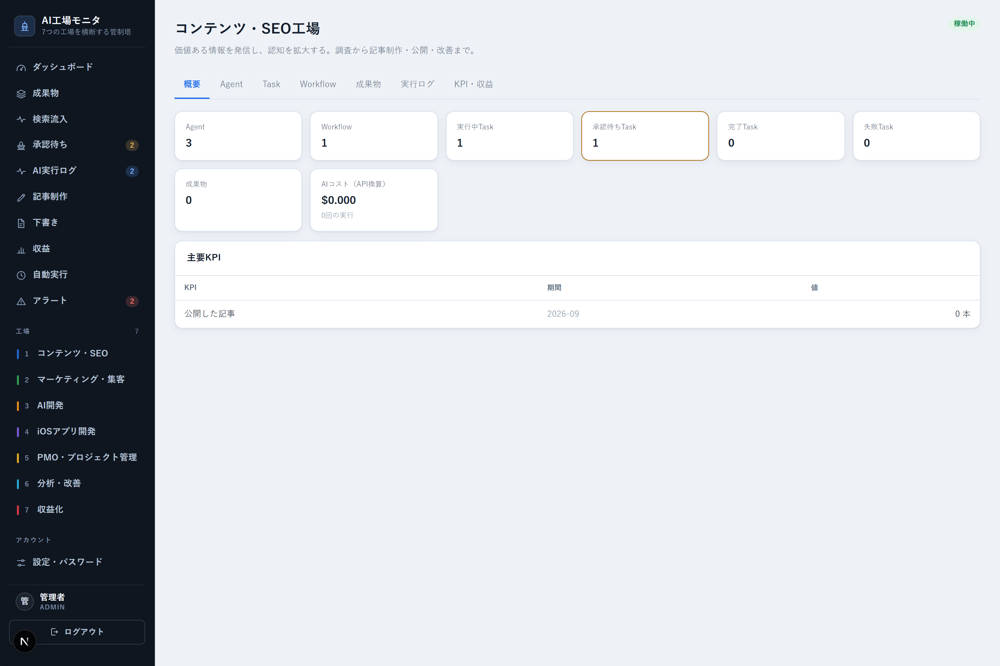
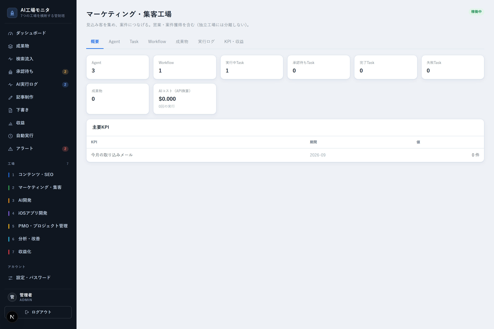
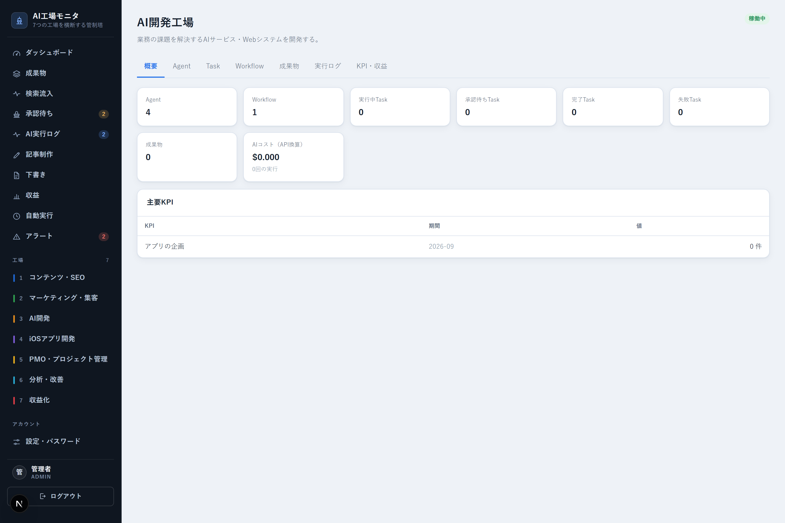
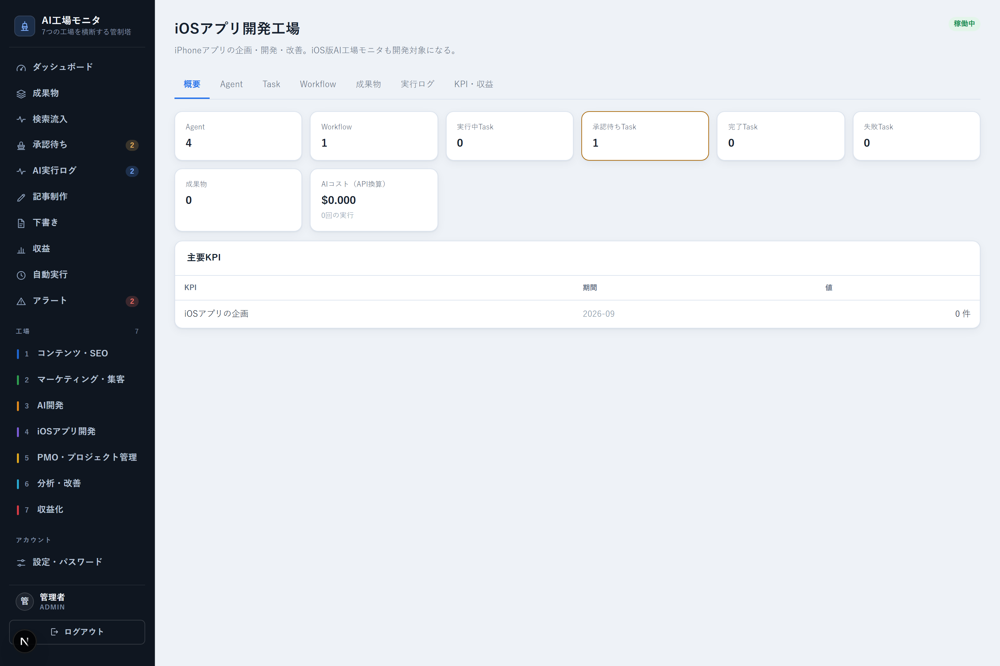
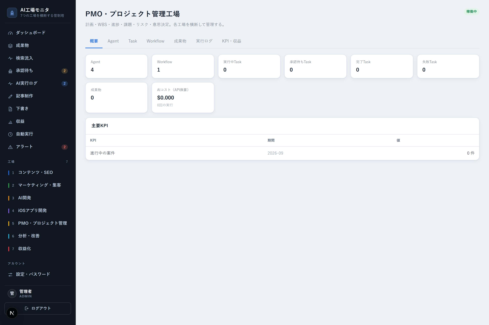
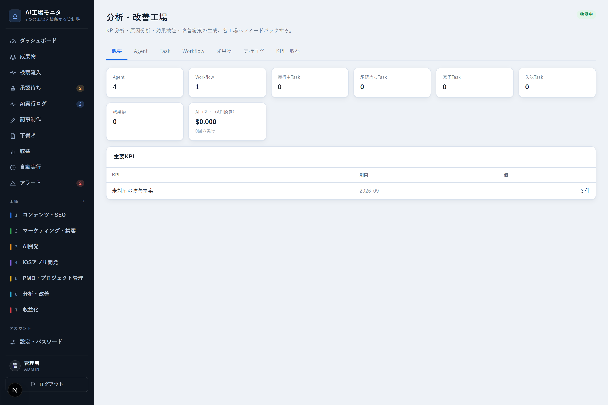
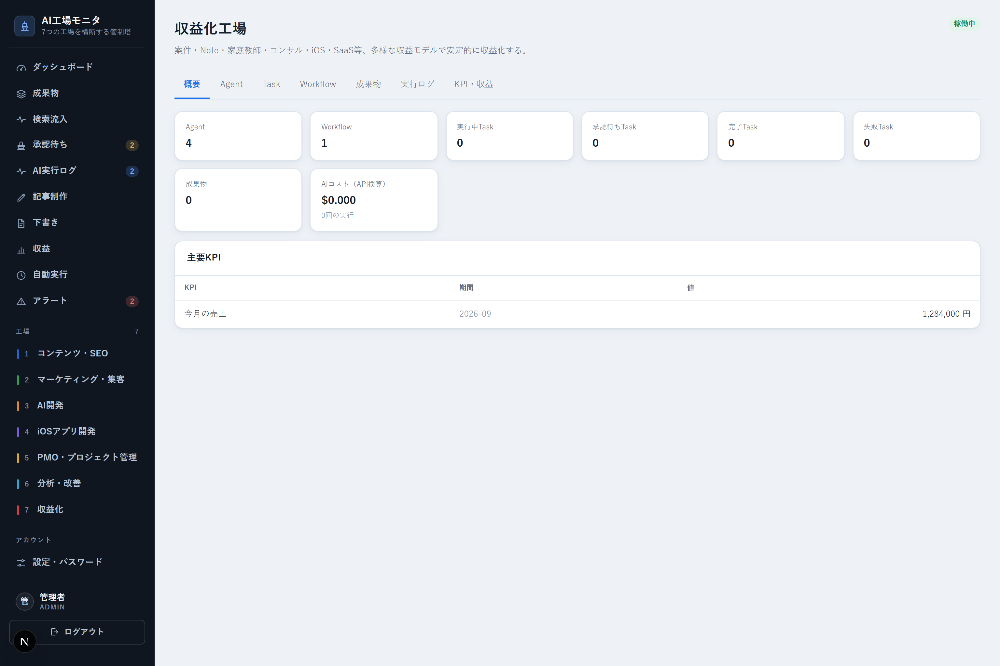
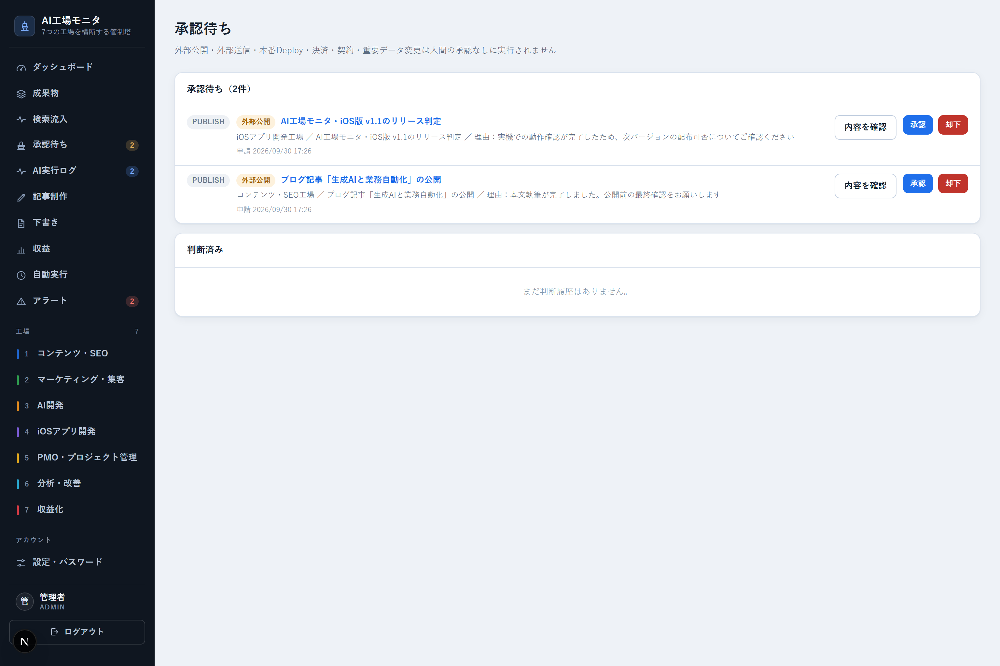
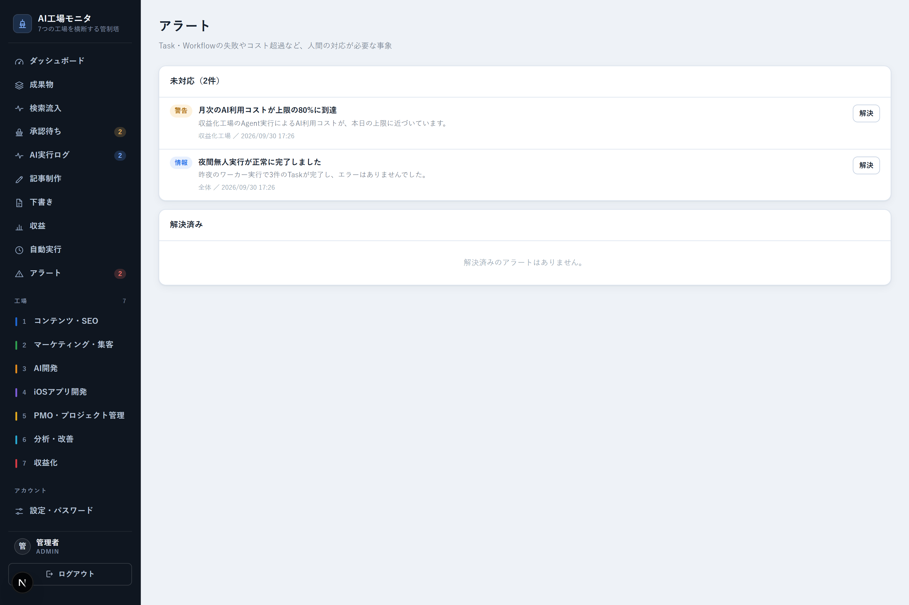

コンテンツ制作・SEO・マーケティング・自社開発・iOSアプリ開発・PMO・分析・収益化。
私たち自身の業務をAIで動かすために内製した、AI業務オペレーション基盤「AI工場OS」です。AIの実行・承認・成果物・コストを記録しながら、日々の業務を「工場」として自動で流します。AI工場モニタから、7つの工場の稼働状況を横断して確認できます。
「AI実行の記録100%」は、すべてのAgent実行を監査ログ（ExecutionLog）へ記録する設計を指します。効果を示す実測の改善率ではなく、システムの仕様です。
AI → 下書き → 承認 → 実行 → 監査ログ。これを全業務で繰り返します。
だから、単なる「AI自動化ツール」ではありません。AIを組み込んだ業務オペレーション基盤——それがAI工場OSです。
記事を書く、SEOを改善する、自社製品を開発する、iOSアプリを作る、案件を管理する、収益を分析する——業務の中身は違っても、進み方は同じです。AIが下書きをつくり、人が確認し、承認されたものだけが実行される。
この共通の形を1つの基盤にまとめ、業務ごとに「工場」として並べたものがAI工場OSです。各工場の進行状況・収益・承認待ちは、AI工場モニタという1つの管制塔ダッシュボードから横断的に確認できます。
業務を「担当者ごとの属人的な作業」ではなく「AIと人が交互に手を入れる1本のライン」として捉える。
それが、AI工場OSという名前に込めた考え方です。
AI工場モニタの管制塔画面（実際の画面。金額は非表示にしています）
業務領域ごとに独立した7つの「工場」が並び、それぞれがAgent（AIの担当者）・Task（実行単位）・Artifact（成果物）・Workflow（工程の連なり）という共通の部品で動きます。工場同士は直接依存せず、成果物を介してゆるやかに連携します。
工場ごとに、実際にどんなことをしているかを、画面とあわせてご紹介します。
素材収集から執筆、事実確認、公開まで、ブログ記事の制作を自動で進めています。クライアント向け記事は構成案の承認から本文の仕上げまで自動で進み、修正も対話形式で、どこがどう変わったかを確認しながら行えます。公開後もアクセスデータを取得し、リライト提案・動画化まで一気通貫でつながります。

コンテンツ・SEO工場の詳細画面（実際の画面。数値はデモデータです）
「連絡への対応」と「発信・告知」の2種類を担当する工場です。Gmailを定期的に監視し、LPの問い合わせ・紹介・ランサーズ／クラウドワークス／Wantedly／LinkedInなどから届くメールを自動で検知。内容に応じて返信文・提案の骨子・料金の目安、または応募文の下書きをAIが作成します。あわせて、公開したブログ記事・Note・YouTube動画について、X・Threads・LinkedIn・Facebook・Instagramそれぞれの文体に合わせた告知文の下書きも作成します。実際の送信・投稿は人が行います。

マーケティング・集客工場の詳細画面（実際の画面。数値はデモデータです）
自社プロダクトのアイデアを整理し、検討状況を管理する工場です。思いついたアイデアはナレッジとして登録され、一覧で確認できます。AI工場OS自体の機能追加は、私たち（人）がClaude Codeで直接実装しています。

自社AI開発工場の詳細画面（実際の画面。数値はデモデータです）
iOSアプリの企画をAIが担当する工場です。この工場の企画をもとに実際に作ったのが、管制塔のiPhoneアプリ（ホーム・工場・アラート・提案の4画面）。外出先からでもスマホで工場の稼働状況を確認でき、ログインして安全に利用できます。

iOSアプリ開発工場の詳細画面（実際の画面。数値はデモデータです）
案件やプロジェクトの進捗をコードで正確に集計し、レポートを作成する工場です。あわせて、思いついたことを自由入力するだけで、AIが「ナレッジ」「予定」「アプリの企画」のいずれかに振り分けて提案する『クイック入力』機能も、この工場が担当しています。

PMO・プロジェクト管理工場の詳細画面（実際の画面。数値はデモデータです）
運転データ（実行状況・アラート・KPI・収益など）をコードで正確に集計し、そこから改善提案だけをAIが作成する工場です。集計自体はAIに任せず、コードで行います。

分析・改善工場の詳細画面（実際の画面。数値はデモデータです）
実際の売上データをコードで正確に集計し、収益化の状況を見える化する工場です。案件・業務委託、コンサル・顧問、Note販売、SaaS・ツールなど、収益源ごとの内訳をAI工場モニタに反映します。

収益化工場の詳細画面（実際の画面。数値はデモデータです）
どの工場も、進み方は同じです。AIに任せきりにせず、かといって人がゼロから作るのでもない、下書きと承認の往復で進みます。
各工場には、業務ごとの役割を持ったAgent（例：構成作成、本文執筆、市場調査）が登録されています。AgentはTaskを実行してArtifact（成果物）を生成し、複数のTaskをつないだものがWorkflowです。外部公開・外部送信・本番反映・重要データ変更を伴うステップには承認フラグが立ち、これを通らない限り完了扱いにはなりません。

承認待ち画面（実際の画面。デモデータです）。「外部公開・外部送信・本番Deploy・決済・契約・重要データ変更は人間の承認なしに実行されません」という方針をそのまま画面にしています
承認不要な工程（市場調査や構成案づくりなど）は、夜間に無人で実行するワーカーに任せています。1回の起動で実行するTask数・Workflow数の上限、1日あたりのAI利用コスト上限、古くなった実行ロックの自動解放、二重起動の防止を設けたうえで、Windowsのタスクスケジューラから定期実行しています。暴走を防ぎながら、人の手が空いていない時間帯も業務を進められる仕組みです。
毎日02:00の定期実行では、収益化工場が売上の点検と報告を、分析・改善工場が運転データの分析を、PMO・プロジェクト管理工場が案件の進行確認と朝の報告を、それぞれ無人で進めます。夜の間に整理された内容を、朝にまとめて確認できます。

アラート画面（実際の画面。デモデータです）。コスト超過や実行完了のお知らせもここに集約されます
AIに実行を任せる以上、「何をしているか分からない」状態は避けなければなりません。権限管理・承認記録・監査ログをセットで設計しています。
コンセプトの説明だけでなく、実際にAI工場OSが動かして生まれた成果物をご紹介します。
Web検索を伴う構成案の作成から、承認、本文執筆、承認、自社ブログへの公開まで、実際に稼働させて複数記事を公開しています。クライアント向け記事制作にも同じラインを応用し、構成→承認→本文執筆の並行実行に対応しています。
公開した記事の内容をもとに、姉妹プロジェクトの動画生成基盤と連携してYouTube動画を自動生成し、実際にチャンネルへ投稿しています。ナレーション・字幕・シーン構成までを一気通貫で作成し、さらにInstagramリールやTikTok向けのショート動画まで自動で作成しています。
ランサーズ・クラウドワークス・Wantedly・LinkedIn・LPの問い合わせフォームなどから届くメールをGmail経由で自動検知し、AIが内容を要約して返信・応募の下書きを提案します。見逃しを防ぎ、対応の初動を早くします。
自社プロダクトのアイデアをナレッジとして登録・一覧管理しています。AI工場OS自体の機能追加は、私たちがClaude Codeを使って直接実装しており、自分たちが使うツールを自分たちで作り、使いながら直していくサイクルを実践しています。
Web検索による競合調査、MVPスコープの評価、UI設計までをAIが担当し、SwiftUIで実装したアプリを開発者本人の物理iPhoneに実際にインストールして動作を確認しています。サーバー側の認証をBearer Token方式に対応させ、実データでの接続まで実装しました。
承認不要な工程を対象に、1日あたりのコスト・実行数の上限を設けたうえで夜間に自動実行しています。実行が失敗して残ったロックは一定時間で自動解放し、翌朝には結果をサマリーとして確認できます。
AI工場OSで実践しているのは、コンテンツ制作や開発に限った話ではありません。業務を「工場」に分けて、AIが下書きし人が承認するラインを1つずつ作っていく、という考え方そのものです。8つの領域に当てはめると、たとえば次のような工場の分け方が考えられます。
※ 実際の導入事例ではなく、業務の分け方の一例です。貴社の業務に合わせた分け方をご相談いただけます。
AI工場OSはClaude Code（Anthropic社のAIコーディングツール）を用いて内製しています。技術スタックはNext.js・Prisma・SQLiteです。
AI工場OSはパッケージ製品ではありませんが、「AIが下書きし人が承認する」「全実行を記録する」という設計思想は、業種を問わず応用できます。自社の業務自動化にご興味があれば、お気軽にご相談ください。
通常1営業日以内にご返信させていただきます